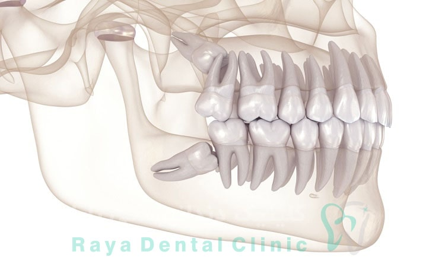

با دندان عقل نهفته چه کنیم و چه علائمی دارد؟
دهان انسان به طور معمول برای 32 دندان که شامل چهار دندان عقل می
شود، فضای کافی ندارد، بنابراین اگر دندان عقل بیرون بیاید، ممکن است
باعث شلوغی، عفونت، گوش درد و تورم شود. به طور کلی، افراد دارای
چهار دندان عقل هستند. یک فرد می تواند بین هیچ تا چهار داشته باشد و
در موارد نادر، افراد ممکن است بیش از چهار داشته باشند. اما با
دندان عقل نهفته چه کنیم و چه علائمی دارد؟ سوالی که ممکن است ذهنتان
را درگیر کرده باشد. داشتن یک فک یا دهان کوچک با دندان های زیاد
اجازه نمی دهد که دندان عقل بیرون بیاید – آنها به طور کامل در دهان
بیرون نمی آیند. این همچنین می تواند منجر به ازدحام، عفونت، گوش
درد و تورم شود. دندان عقل همچنین می تواند در جهت غیر معمول رشد
کند، به طرفین، با زاویه غیر معمول یا فقط به طور جزئی رشد کند.
دندان های عقلی که در موقعیت های متفاوت رشد می کنند می توانند باعث
درد و آسیب به دندان های مجاور شوند. حتی اگر آسیب ظاهری رخ ندهد،
زاویه و موقعیت دندان عقل می تواند آنها را مستعد ابتلا به بیماری ها
و تجمع باکتری ها کند که می تواند منجر به عفونت و پوسیدگی شود. در
بیشتر موارد، افراد تا زمانی که بهداشت دهان و دندان خود را رعایت می
کنند، نیازی به درآوردن دندان عقل خود ندارند. با این حال، اگر فرد
یا دندانپزشک متوجه تغییراتی در دهان شود، ممکن است نیاز به برداشتن
داشته باشند.
علائم دندان عقل نهفته
دندان عقل نهفته می تواند باعث ایجاد طیف وسیعی از مشکلات شود. این
علائم شامل:
- درد لثه یا فک
- لثه های قرمز و متورم
- فشار
- درد و ناراحتی
- عفونت
- کیست ها
- آسیب به دندان های مجاور
- پوسیدگی دندان
- بیماری لثه
درمان و تسکین علائم دندان عقل نهفته
درمان های زیر می تواند به تسکین علائم کمک کند. استفاده از مسکن ها
می تواند به کاهش درد کمک کند، اما فرد باید آنها را ببلعد و روی
محل دندان درد نگذارد. یک دهانشویه آب گرم و یک قاشق چایخوری نمک چند
بار در روز می تواند درد و التهاب را کاهش دهد. یک دهانشویه ضد
باکتری، مانند کلرهگزیدین، می تواند به کاهش عفونت کمک کند. اگر درد
ادامه یابد، فرد باید به دنبال مراقبت های پزشکی باشد. دندانپزشک
ممکن است دندان ها را تمیز کند و آنتی بیوتیک تجویز کند، اما اگر
مشکل عود کند، ممکن است دندان ها نیاز به برداشتن داشته باشند.
برداشتن دندان عقل نهفته
اگر دندان عقل باعث درد و ناراحتی در فرد شود یا اگر به دندان های
مجاور یا استخوان فک آسیب برساند یا ممکن است آسیب ببیند،
دندانپزشکان بیرون آوردن دندان عقل را توصیه می کنند. در مورد دندان
عقل نهفته بدون علامت، پزشکان نمی توانند به طور دقیق پیش بینی کنند
که کدام دندان عقل مشکل ایجاد می کند. با این حال، زاویه رویش دندان
و نحوه فشار آن به دندان های دیگر می تواند سرنخ هایی را ارائه
دهد.
آیا همه دندان های عقل نیاز به کشیدن دارند؟
دندانپزشکان اغلب اگر دندان عقل را سالم، کاملا بیرون زده و در
موقعیت های مناسب داشته باشند و فرد بتواند به راحتی آنها را تمیز
کند، رها می کنند. و توصیه می کنند که فرد به آن اهمیتی ندهد و آن را
نکشد. با این حال، بسیاری از دندانپزشکان و جراحان دهان،، برداشتن
دندان عقل نهفته را به عنوان یک اقدام پیشگیرانه در برابر عفونت،
مانند بیماری لثه و پوسیدگی دندان، پیشنهاد می کنند. دندان پزشک
همچنین در مواقعی که دندان های عقل نهفته از رشد صحیح دندان های
دیگر جلوگیری می کنند، باید آن ها را خارج کند. پیش از این، افراد
دندان عقل خود را خارج می کردند، چه مشکلی ایجاد می کرد یا نه. هنوز
بحث در مورد اینکه آیا دندان هایی را که علائمی ایجاد نمی کنند حذف
کنیم یا آنها را به حال خود رها کنیم، ادامه دارد.

دلایل نهفته شدن دندان عقل
دندان عقل معمولاً به دلیل کمبود فضا در دهان نهفته می شود یا در
استخوان فک یا لثه گیر می کند. یکی دیگر از دلایل رایج بیرون آمدن
دندان ها با زاویه متفاوت است. یک مطالعه در سال 2018 نشان می دهد که
ژنتیک ممکن است در موقعیت دندان عقل بالایی نقش داشته باشد. دندان
عقل نهفته بسته به نحوه رشد دندان ها می تواند متفاوت رشد کند:
نهفتگی مزیوآنگولار: به این معنی است که دندان عقل با زاویه ای به
سمت جلوی دهان رشد می کند. نهفتگی عمودی: این به زمانی اشاره دارد که
دندان عقل از خط لثه عبور نمی کند. نهفتگی دیستوگولار: به این معنی
است که دندان عقل با زاویه ای به سمت پشت دهان رشد می کند. نهفتگی
افقی: به این معنی است که دندان عقل با زاویه 90 درجه رشد می کند و
به ریشه دندان آسیاب کناری می رود.